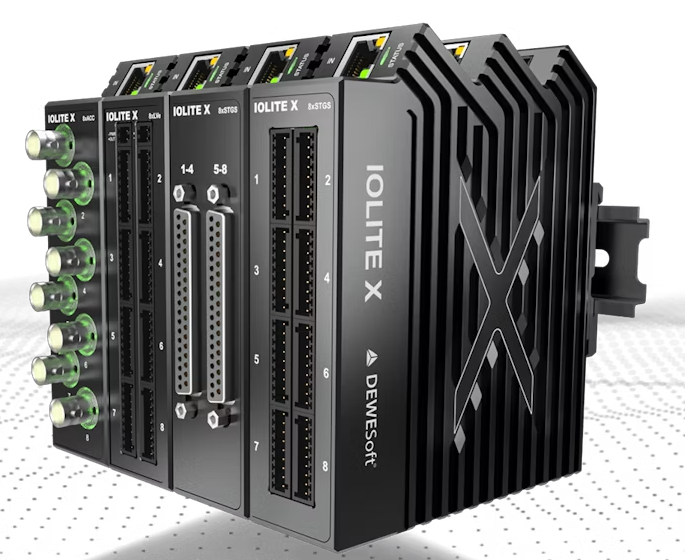
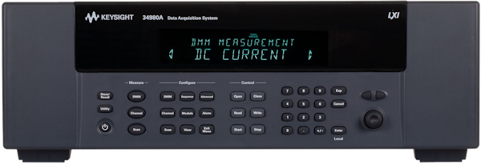
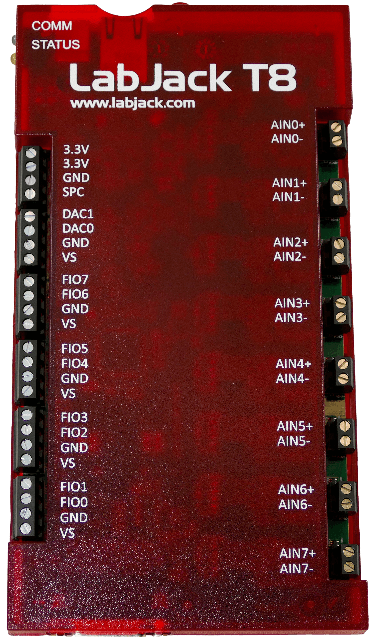
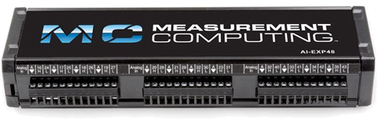
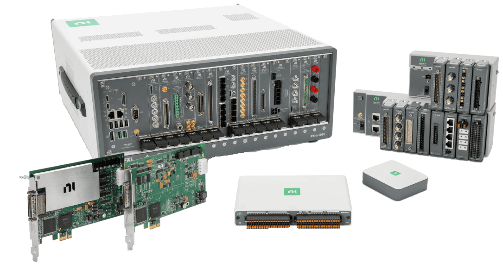

Data Acquisition (DAQ)#
Using InstroDAQ for vendor-independent data acquisition
InstroDAQ is a hardware abstraction layer (HAL) that provides a unified interface for data acquisition devices from multiple vendors. The key benefit is vendor-independent code: swap the driver instance you hand to InstroDAQ and the same configuration/acquisition code works across different hardware.
Supported Vendors#





If your vendor or model is not listed, see Driver Development, or open a Driver Request issue on GitHub.
Key Concepts#
Lifecycle Pattern#
The typical InstroDAQ workflow follows this pattern:
InstroDAQ(name, driver, ...)- Instantiate the DAQ with a vendor driveropen()- Establish connection to the hardwareConfigure - Set up channels, timing, and other settings
start()- Begin acquisition (if using hardware timing or the software-timed daemon)Acquire data - Read/fetch measurements
stop()- End acquisition (if started)close()- Disconnect from hardware
Channels#
InstroDAQ supports both analog and digital I/O:
Analog Input/Output: Measurements and generation with configurable ranges
Digital Input/Output: Line-based or port-based digital I/O
Aliases#
Map vendor-specific physical channel names (e.g., “AIN0”) to logical names (e.g., “temperature_sensor”)
Channel aliases are used as channel names when data is published to Nominal Core or Connect.
Timing Modes#
InstroDAQ supports three acquisition modes:
Software-Timed (Manual Polling)
You call
read_analog()when you want a sampleNo need to call
start()orstop()Use case: Low-frequency monitoring, event-driven sampling
Software-Timed (Background Daemon)
Configure the polling rate with
configure_ai_sw_sample_rate()Call
start()to launch the background daemon, which callsread_analog()once per period and publishes the resultsUse case: Low-frequency continuous monitoring without a hardware sample clock
Hardware-Timed (Buffered Acquisition)
Configure sample rate with
configure_ai_hw_sample_rate()Call
start()to begin background acquisitionData automatically published via the background daemon, OR manually fetch with
read_analog()Use case: Mid to high frequency continuous monitoring with deterministic sample timing.
Hardware and software timing are mutually exclusive on one instance: configuring the second mode raises TimingConfigException. To run both against one device, build a separate InstroDAQ per mode with non-overlapping channels: see the NI hardware- and software-timed example.
Creating an InstroDAQ Instance#
Construct a vendor driver and pass it to InstroDAQ:
from instro.daq.drivers.labjack import LabJackTSeriesDriver
from instro.daq import InstroDAQ
# Create a LabJack DAQ
daq = InstroDAQ(
name="myDAQ",
driver=LabJackTSeriesDriver(device_id="440020473"), # Vendor-specific resource identifier
)
Vendor-Specific Driver Examples#
from instro.daq import InstroDAQ
# National Instruments (device name from NI-MAX)
from instro.daq.drivers.ni import NIDAQDriver
daq = InstroDAQ(name="niDAQ", driver=NIDAQDriver(device_id="Dev1"))
# LabJack (serial number, device name, or IP address)
from instro.daq.drivers.labjack import LabJackTSeriesDriver
daq = InstroDAQ(name="ljDAQ", driver=LabJackTSeriesDriver(device_id="440020473"))
# Measurement Computing (MCC device unique ID, optionally suffixed with a board number)
from instro.daq.drivers.mcc import MCCDriver
daq = InstroDAQ(
name="mccDAQ",
driver=MCCDriver(device_id="344371:0"), # "<unique_id>" or "<unique_id>:<board_number>"
)
# Keysight 34980A (SCPI/VISA device: driver owns its VisaDriver)
from instro.daq.drivers import Keysight34980A
daq = InstroDAQ(
name="keysightDAQ",
driver=Keysight34980A("TCPIP0::<IP_ADDRESS>::INSTR"),
)
# DewesoftX (unstable: attaches to the DewesoftX instance running on this Windows PC)
from instro.unstable.daq.drivers import DewesoftX
daq = InstroDAQ(name="dewesoftDAQ", driver=DewesoftX())
Configuring Channels#
Analog Input Channels#
Configure analog input channels with measurement range and logical names:
daq.configure_voltage_input(
physical_channel="AIN0", # Vendor-specific channel name
alias="temperature_sensor", # Your logical name (used for publishing)
range_min=0.0, # Minimum voltage (V)
range_max=5.0 # Maximum voltage (V)
)
Note
The physical_channel naming convention depends on your DAQ vendor:
NI DAQmx: fully qualified
device/channel, for example “Dev1/ai0”, “Dev1/ai1”.LabJack: “AIN0”, “AIN1”, etc.
MCC: Integer channel index as a string, for example
"0","1".Keysight: Depends on module slot and channel configuration
DewesoftX: The channel
Nameshown in the DewesoftX channel setup tab, for example"AI 1"
Refer to your device’s documentation for channel naming.
Scalers#
It’s common for the data being read by an analog input channel to need scaling to represent a real-world physical phenomenon. For example, a 0-5 volt sensor measuring pressure.
InstroDAQ supports adding a Scaler object when you configure your analog channel. The Measurement published and returned by read_analog will contain these scaled values.
Example of a 0-5V pressure sensor that measures 0-3000 psia.
from instro.daq.scaling import LinearScaler
daq.configure_voltage_input(
physical_channel="AIN0", # Vendor-specific channel name
alias="pressure_sensor", # Your logical name (used for publishing)
range_min=0, # Minimum voltage (V)
range_max=5, # Maximum voltage (V)
scaler = LinearScaler(gain = 600, offset = 0, units = "psia")
)
You can cascade multiple scalers together using the ScalerPipeline scaler.
For example, a thermocouple that’s fed into an amplifier and then the DAQ will require two stages of scaling.
Scaling out the amplifier to get to the actual voltage seen across the thermocouple terminals.
Scaling the voltage seen across the thermocouple terminals to temperature.
from instro.daq.scaling import ScalerPipeline, ReverseLinearScaler
from instro.daq.scaling.thermocouple import ThermocoupleSensor
scaler_pipeline = ScalerPipeline(ReverseLinearScaler(gain=<amplifier gain>, offset=<voltage offset>, units="V"), ThermocoupleSensor(type = <TC_type>, cjc_temp = <cjc temp in Celsius>))
You can create your own scaler by subclassing Scaler and implementing scale and units methods.
from instro.daq.scaling import Scaler
class TheAnswer(Scaler):
def scale(self, raw: float | int) -> float:
return raw * 42
@property
def units(self) -> str:
return "everything"
Analog Output Channels#
Configure analog output channels:
daq.configure_voltage_output(
physical_channel="DAC0", alias=f"ao_0", range_min=0, range_max=5
)
Note
The physical_channel naming convention depends on your DAQ vendor:
NI DAQmx: fully qualified
device/channel, for example “Dev1/ao0”, “Dev1/ao1”.LabJack: “DAC0”, “DAC1”, etc.
MCC: Integer channel index as a string, for example
"0","1".Keysight: Depends on module slot and channel configuration
Refer to your device’s documentation for channel naming.
Digital Channels#
Before configuring a digital channel, you need to specify the following parameters to match your application and DAQ hardware:
InstroDAQ exposes configure_digital_input and configure_digital_output for a single line, and configure_digital_port for a whole port.
direction (port only): Use
Direction.INPUTfor digital input orDirection.OUTPUTfor output. The line methods carry the direction in the method name, so they take nodirectionargument.physical_channel: The physical line or port on your DAQ device (e.g.,
"5101","5101/2"for Keysight, or"FIRSTPORTA","FIRSTPORTA/0"for MCC). This name is vendor-specific. Refer to your device documentation.logic: Sets whether the channel treats a HIGH or LOW physical level as “True”. This is required for correct logic interpretation.
logic_level (optional): Specifies the voltage threshold (in volts) used to distinguish HIGH from LOW, if your device supports changing this.
alias (optional): A logical name for the channel, helpful for clarity and for use with publishers.
port_width (port only): Port width in bits (8/16/32/64), required by
configure_digital_port.
For example, to configure a digital input line with a custom logic threshold:
from instro.daq.types import Logic
daq.configure_digital_input(
physical_channel="5101/2",
alias="limit_switch",
logic=Logic.HIGH,
logic_level=2.0 # Optional: 2V threshold for HIGH, if supported by hardware
)
If configuring an entire port:
from instro.daq.types import Direction, DigitalPortWidth, Logic
daq.configure_digital_port(
direction=Direction.OUTPUT,
physical_channel="5101",
logic=Logic.HIGH,
port_width=DigitalPortWidth.WIDTH_8 # E.g., for 8-bit port
)
Refer to your DAQ device’s documentation for available physical channel names and supported features.
Typed Channel Configuration#
InstroDAQ exposes a measurement-specific configuration method per channel kind. Each builds a typed channel (AnalogVoltageChannel, AnalogCurrentChannel, AnalogThermocoupleChannel, or a DigitalLineChannel) and delegates to a dedicated driver method:
Method |
Channel type |
Driver method |
|---|---|---|
|
|
|
|
|
|
|
|
|
|
|
|
|
|
|
|
|
|
|
|
|
Analog driver support:
Driver |
Voltage input |
Voltage output |
Current input |
Current output |
Thermocouple input |
|---|---|---|---|---|---|
NI-DAQmx |
✅ |
✅ |
✅ |
✅ |
✅ |
LabJack T-Series |
✅ |
✅ |
❌ |
❌ |
✅ |
MCC |
✅ |
✅ |
✅ |
❌ |
✅ |
Keysight 34980A |
✅ |
❌ |
❌ |
❌ |
❌ |
DewesoftX (unstable) |
✅ |
❌ |
✅ |
❌ |
✅ |
Digital driver support:
Driver |
Line input |
Line output |
Port input |
Port output |
|---|---|---|---|---|
NI-DAQmx |
✅ |
✅ |
✅ |
✅ |
LabJack T-Series |
✅ |
✅ |
❌ |
❌ |
MCC |
✅ |
✅ |
✅ |
✅ |
Keysight 34980A |
✅ |
✅ |
✅ |
✅ |
DewesoftX (unstable) |
❌ |
❌ |
❌ |
❌ |
LabJack thermocouple channels#
The LabJack driver registers a thermocouple’s AIN# in the scan list as raw volts and converts each sample to temperature on read with LJM’s TCVoltsToTemp and the devices internal CJC. More info about using thermocouples with a LabJack device can be found here.
from instro.daq.scaling.thermocouple import TC_TYPE, TC_UNIT
daq.configure_thermocouple_input("AIN0", TC_TYPE.K, alias="tc0", unit=TC_UNIT.CELSIUS)
Cold-junction compensation depends on cjc_source:
INTERNAL(default): the driver reads the device’s cold-junction sensor alongside the thermocouple. The T8 streams the per-channelTEMPERATURE#sensor, the T7 streams the internal sensor’s raw volts (AIN14), and the T4 snapshotsTEMPERATURE_DEVICE_Kbefore each software-timed read (theTEMPERATURE_DEVICE_Kregister cannot be streamed).CONSTANT: pass the reference junction temperature viacjc_temp, expressed in the channel’sunit.CHANNEL: not yet supported by this driver.
Note
The T4 snapshots CJC once when the stream starts, so its thermocouple readings can drift over a long hardware-timed acquisition.
To back external signal conditioning out of the measured volts before conversion, pass a tc_input_scaler when configuring the channel. The T4’s 12-bit ADC cannot resolve a bare thermocouple, so LabJack recommends using an LJTick-InAmp: the T4 defaults tc_input_scaler to the InAmp’s x51 gain and 1.25 V offset jumpers.
from instro.daq.scaling.scaling import ReverseLinearScaler
daq.configure_thermocouple_input(
"AIN4",
TC_TYPE.K,
unit=TC_UNIT.CELSIUS,
tc_input_scaler=ReverseLinearScaler(gain=51, offset=1.25, units="V"),
)
unit is required and is a TC_UNIT member. It governs cjc_temp, range_min/range_max, and the returned readings. A channel scaler applies to the converted temperatures.
daq.configure_thermocouple_input(
"AIN0", TC_TYPE.K, alias="tc0", unit=TC_UNIT.FAHRENHEIT, cjc_source="CONSTANT", cjc_temp=77.0
)
MCC thermocouple channels#
The MCC Universal Library converts thermocouple readings on the device and returns temperature directly. The driver therefore rejects tc_input_scaler, and cold-junction compensation is always internal: cjc_source must be INTERNAL (the default).
from instro.daq.scaling.thermocouple import TC_TYPE, TC_UNIT
daq.configure_thermocouple_input("0", TC_TYPE.K, alias="tc0", unit=TC_UNIT.CELSIUS)
MCC devices apply one board-wide temperature scale, so every thermocouple channel must use the same unit; configuring a channel in a different unit raises ValueError. During hardware-timed acquisition an open or overranged thermocouple reads NaN, matching the LabJack driver.
Thermocouple channels on MCC expansion boards (the CIO-EXP and EXP-GP families) are not supported. The driver configures thermocouple channels on the base board only.
Setting the channel type to thermocouple fixes the input range in hardware at plus or minus 125 mV, and the MCC Universal Library exposes no call to change it. range_min and range_max are therefore ignored on MCC thermocouple channels. They do not clip readings and they do not raise. Use unit to control the temperatures the driver returns.
MCC input mode#
MCC boards set the analog input mode in one of two ways. Some boards set it per channel. Others set it for the whole board. The driver tries the per-channel call first and falls back to the board-wide call when the device rejects it. MCC hardware has no non-referenced single-ended mode, so TerminalConfig.NRSE raises ValueError.
On board-wide devices every configured channel shares one mode. Configuring several channels with different terminal_config values leaves the board in the mode of the channel configured last. The earlier channels read in that mode too, with no error raised.
from instro.daq.types import TerminalConfig
daq.configure_voltage_input("0", alias="ch0", terminal_config=TerminalConfig.RSE)
daq.configure_voltage_input("1", alias="ch1", terminal_config=TerminalConfig.DIFF)
# On a board-wide device the whole board is differential now, channel 0 included.
DewesoftX channels#
Warning
This driver is currently available only in the Unstable package.
The DewesoftX driver streams live channels from a DewesoftX instance running on the same Windows PC. DewesoftX owns the channel setup, the scaling, and the sample clock, so the driver binds existing channels instead of configuring hardware:
configure_voltage_input,configure_current_input, andconfigure_thermocouple_inputall bind the DewesoftX channel named byphysical_channel. The channel must be set to Used in DewesoftX. Range, terminal, and thermocouple settings are ignored.Scalers are not supported for configured channels for
DewesoftXbackedInstroDAQs.configure_ai_hw_sample_raterequiressample_rateto be the rate the DewesoftX setup already runs at, and raisesHWTimingExceptionfor any other value, naming the rate to pass.get_actual_sample_rate()returns the rate once timing is configured.Change the rate in the DewesoftX setup, not through
instro.Synchronous channels are timestamped from the DewesoftX store start time and the sample count. Asynchronous channels (for example CAN signals) keep their own per-sample timestamps.
Samples can only be read when a DewesoftX storing session is in progress.
start()attaches to the running storing session.start(start_storing_session=True)starts one, andstop(stop_storing_session=True)ends it. Passdxd_nameto the driver to name the data file DewesoftX stored to during the storing session.
Analog outputs and digital channels are not supported.
Note
Configure hardware timing, not software timing
configure_ai_sw_sample_rate() is not supported by this driver. Call configure_ai_hw_sample_rate() instead.
Hardware timing here means DewesoftX owns the sample clock, not that instro reads the acquisition hardware. Every sample still arrives from the running DewesoftX software.
Hardware-Timed Sample Rate#
For continuous hardware-timed acquisition, configure the sample rate.
daq.configure_ai_hw_sample_rate(
sample_rate=1000.0, # Hz
samples_per_channel=500 # Optional: samples per read (defaults to sample_rate/10)
)
The samples_per_channel parameter determines how many samples, per channel, are returned on every call to read_analog().
The lower the
samples_per_channel, the more responsive and lower latency your app will be, but may not be able to keep up with the sample rate.The ratio of
sample_ratetosamples_per_channeldetermines how often data will be fetched from the DAQ buffer.Example, if
sample_rateis 1000 andsamples_per_channelis 500, you’ll see 500 sample batches of 1000Hz data twice a second, for every channel.
The default for
samples_per_channel, if left unset, is dynamically set to enable fetching batches 10 times per second. This is a reasonable balance between reliably keeping up with the data stream and app responsiveness.
Warning
Hardware Timing Constraints
Different DAQ devices have different timing capabilities:
Multiplexed DAQs (e.g., LabJack T4/T7, most NI DAQ devices, most MCC devices): Maximum per-channel rate decreases with more channels
Simultaneous DAQs (e.g., LabJack T8): All channels sampled simultaneously
Sample rate limits: Check your device specifications
Note
A single InstroDAQ instance carries one analog input sample rate. To run multiple NI DAQmx tasks at different hardware sample rates, create one InstroDAQ instance per task: see the NI multi-rate acquisition example.
Software-Timed Sample Rate#
For continuous acquisition without a hardware sample clock, configure a software-timed polling rate instead. The background daemon then paces read_analog() calls at 1 / sample_rate.
daq.configure_ai_sw_sample_rate(
sample_rate=10.0, # Hz, paces the background daemon loop
)
The device never starts a buffered acquisition in this mode: each daemon iteration triggers an immediate conversion, timestamped when the read returns. The configured rate is a ceiling, not a guarantee. If a DAQ read takes longer than the period, the daemon runs as fast as the reads allow.
Analog Input#
Software-Timed Acquisition (Manual Polling)#
For manual, on-demand sampling, configure the input channels and call read_analog() in your own loop. See DAQ read analog SW timed without a background daemon.
The read_analog() method returns a Measurement object (or list of Measurement objects for multiple channels) containing:
channel_data: Dictionary mapping channel aliases to lists of valuestimestamps: List of timestamps (nanoseconds since epoch)values: Property returning all values as a list (convenience for single-channel reads)latest: Property returning the most recent value (convenience for single-channel reads)
Software-Timed Acquisition with the Background Daemon#
For continuous software-timed acquisition, configure a polling rate with configure_ai_sw_sample_rate() and start() the background daemon. The daemon calls read_analog() once per period and publishes the results.
While the daemon is running, read() and read_batch() serve analog channels from the acquisition the daemon just completed, so the same read code works whether or not the daemon is running. Both block until the next acquisition arrives, so a read returns new samples instead of the last cached value. read_analog() raises instead: the daemon owns the hardware reads. Call get_channel() to read the channel buffer, which keeps per-channel sample history and the daemon’s own timing channels. See the software-timed example.
Hardware-Timed Acquisition with Background Fetching#
See Two ways to get data for more information regarding background fetching of measurements.
For continuous high-speed acquisition, program the sample clock with configure_ai_hw_sample_rate(), then start() the background daemon and pull samples with get_channel(). See DAQ read analog HW timed.
In this mode:
start()begins hardware-timed acquisition in the background daemonstop()ends the background acquisition
Note
Important Note about Publishers
Data is published as a direct result of an instrument method being called.
For example, when you call read_analog(), this not only returns the DAQ data but also causes all attached Publishers to publish the measurements automatically.
Therefore the background daemon, which is calling instrument methods, is publishing the data!
Hardware-Timed Acquisition with Manual Fetching#
For hardware-timed acquisition where you control when to fetch buffered data, call start(background=False) to fill the hardware buffer without spinning the background daemon, then call read_analog() yourself. See DAQ read analog HW timed without a background daemon.
Warning
Failing to fetch samples from the hardware buffer at a reasonable rate will cause the DAQ data buffer to fill up and data will be either lost or an exception will be raised.
With start(background=False), calling read_analog() during hardware-timed acquisition fetches from the hardware buffer rather than triggering a new conversion.
Analog Output#
Software-Timed Generation#
For manual, on-demand updates of set points, configure the output channels with configure_voltage_output() and call write_analog_value(). See DAQ write analog SW timed.
Digital I/O#
Reading Digital Lines#
from instro.daq.types import Logic
daq.configure_digital_input(
physical_channel="DIO0",
alias="limit_switch",
logic=Logic.HIGH
)
measurement = daq.read_digital_line(channel="limit_switch")
print(f"Digital state: {measurement.latest}")
Writing Digital Lines#
from instro.daq.types import Logic
daq.configure_digital_output(
physical_channel="DIO1",
alias="enable_signal",
logic=Logic.HIGH
)
# Write high (1)
daq.write_digital_line(channel="enable_signal", data=1)
# Write low (0)
daq.write_digital_line(channel="enable_signal", data=0)
Reading and Writing Digital Ports#
For devices that expose digital I/O as parallel ports (multiple lines read or written together), use read_digital_port() and write_digital_port(). Configure the channel with a port_width that matches the hardware port, then read or write the full port as a single integer value.
from instro.daq.types import Direction, DigitalPortWidth, Logic
# Configure an 8-bit digital output port
daq.configure_digital_port(
direction=Direction.OUTPUT,
physical_channel="FIRSTPORTA",
alias="relay_bank",
logic=Logic.HIGH,
port_width=DigitalPortWidth.WIDTH_8,
)
# Write all 8 bits at once (0x0F turns on lines 0-3, off 4-7)
daq.write_digital_port(channel="relay_bank", data=0x0F)
# Configure an 8-bit digital input port and read its value
daq.configure_digital_port(
direction=Direction.INPUT,
physical_channel="FIRSTPORTB",
alias="status_bits",
logic=Logic.HIGH,
port_width=DigitalPortWidth.WIDTH_8,
)
measurement = daq.read_digital_port(channel="status_bits")
print(f"Port value: {int(measurement.latest)}")
Note
Port-based I/O is implemented for MCC, NI DAQmx, and Keysight devices. On LabJack, write_digital_port() and read_digital_port() raise NotImplementedError; use write_digital_line() / read_digital_line() to address individual lines instead. Keysight groups a single port into one channel of at most 32 bits, so DigitalPortWidth.WIDTH_64 is rejected — configure a 64-bit span as two channels. On NI DAQmx, port_width is checked against the port’s physical line count and a mismatch raises ValueError — pass the DigitalPortWidth that matches the hardware port.
Unified Read and Write#
Reading by Alias#
read() accepts a single alias and returns that channel’s Measurement. read_batch() accepts a list of aliases, or None for every configured input channel, and returns a dict keyed by alias, with each value the channel’s Measurement. Analog aliases are served from one batched analog read; digital aliases are read per line or port.
While the background daemon is running, analog aliases are served from the acquisition the daemon just completed instead of triggering a hardware read. The call blocks until the next acquisition arrives, and every alias comes from that same acquisition, so channels never span batches. One acquisition carries samples_per_channel samples per alias when hardware timing is configured, or one sample per alias when software timing is configured. The wait times out at two acquisition durations, with a floor of 10 seconds, so a slow acquisition does not time out. Call get_channel() when you need sample history, a specific sample count, or a read that does not block.
daq.configure_voltage_input(physical_channel="ai0", alias="v0")
daq.configure_digital_input(physical_channel="DIO0", alias="limit_switch")
# A single channel
measurement = daq.read("v0")
print(measurement.latest)
# Several channels of mixed type
result = daq.read_batch(["v0", "limit_switch"])
print(result["v0"].latest, result["limit_switch"].latest)
# Every configured input channel
result = daq.read_batch()
Writing by Alias#
write() writes a single value to a single alias and returns the resulting Command. write_batch() writes values[i] to channels[i] and returns a list of Command objects. Both route each alias to analog or digital output by channel type.
By default, the first write that fails at the device logs a warning and raises RuntimeError naming the failed channel; later channels in the batch are not written. Pass continue_on_failed_write=True to log the failure and continue with the remaining channels instead; the returned list then contains only the successful commands. Every write emits a per-channel log line: <alias> -> succeeded at debug level, or <alias> -> failed: <reason> at warning level.
daq.configure_voltage_output(physical_channel="ao0", alias="ao0")
daq.configure_digital_output(physical_channel="DIO1", alias="enable")
# A single channel
daq.write("ao0", 2.2)
# Several channels, paired by index
daq.write_batch(["ao0", "enable"], [2.2, 1])
Values may be float, int, or bool, and every channel and value is validated before anything is written: each alias must be configured as an output channel (unknown aliases raise KeyError), aliases may appear only once per batch, analog outputs require a finite number within the channel’s configured range_min/range_max, digital lines require 0 or 1 (in any of the three forms), and digital ports require an integer. An invalid value, a duplicate alias, or a channels/values length mismatch raises ValueError with no channels written. Digital values are coerced to int. Relays are not routed through write(); use open_relay() and close_relay().
Example#
More examples found in Examples
Deprecated methods#
These InstroDAQ methods still work, and each emits a DeprecationWarning naming its replacement. They are scheduled for removal in a future release.
Deprecated |
Replacement |
|---|---|
|
|
|
|
|
|
|
|
|
|
Custom driver authors: configure_ai_channel and configure_ao_channel are deprecated on DAQDriverBase for the same reason. Implement configure_ai_voltage_channel and configure_ao_voltage_channel instead.
Vendor Independence#
The power of InstroDAQ is that the same code works across different vendors. To switch vendors, just swap the driver instance:
from instro.daq.drivers.labjack import LabJackTSeriesDriver
from instro.daq.drivers.ni import NIDAQDriver
from instro.daq import InstroDAQ
# LabJack version
daq = InstroDAQ(name="myDAQ", driver=LabJackTSeriesDriver(device_id="440020473"))
# Switch to NI DAQmx: same configuration code works!
daq = InstroDAQ(name="myDAQ", driver=NIDAQDriver(device_id="Dev1"))
The rest of your code (channel configuration, data acquisition, etc.) remains identical.
Custom Driver Development#
For more information on writing a custom driver, see Driver Development.